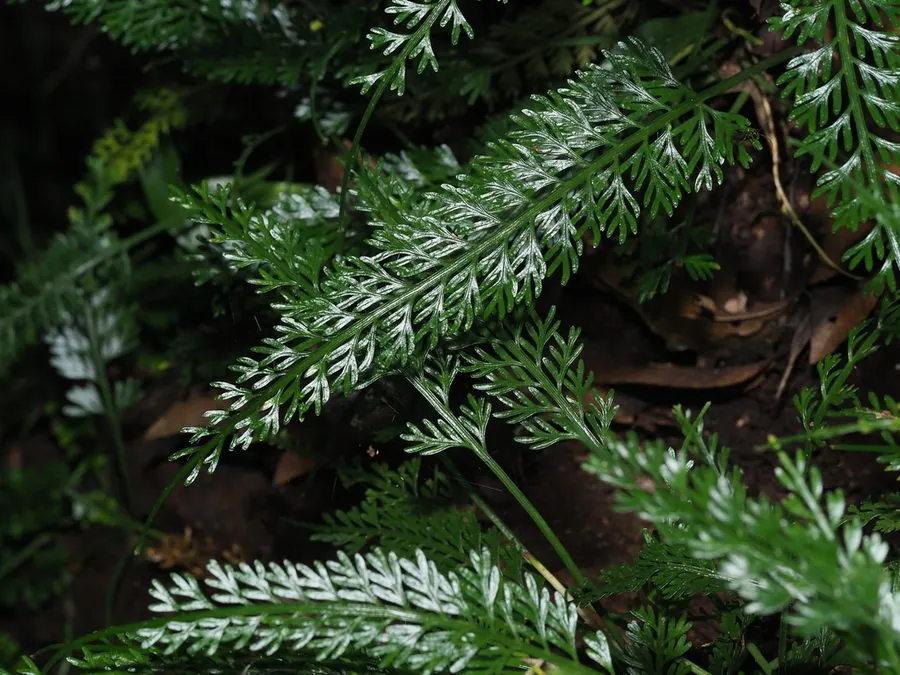

蕨类与裸子植物 · 植物界
长叶铁角蕨 Asplenium prolongatum

铁角蕨科铁角蕨属小型附生蕨类，叶片线状披针形、先端延伸成尾状并生小芽，生于林下石壁与树干，是常见的观赏蕨。
- 分类
- 门蕨类植物门纲水龙骨纲目水龙骨目科铁角蕨科属铁角蕨属
- 栖息环境
- 海拔 500–2000 米的林下石壁、树干与阴湿岩缝，喜温暖湿润、半阴
- 地理分布
- 中国南方、日本、印度及东南亚
- 保护级别
- IUCN 暂无评估；分布较广，野生种群稳定
物种志
长叶铁角蕨为小型附生蕨类，高 10–30 厘米，根状茎短而横走，密被褐色鳞片。叶簇生，线状披针形，一回羽状，长 10–25 厘米，羽片多数、斜展，边缘具细齿；叶轴先端常延伸成尾状，并在顶端萌生小芽，可发育成新株。孢子囊群线形，沿小脉一侧着生，囊群盖线形。
本种分布于中国南方、日本、印度及东南亚，生于海拔 500–2000 米的林下石壁、树干与阴湿岩缝，喜温暖湿润、半阴的环境。它叶片细长、先端能长出小芽，是铁角蕨属中独特的“胎生”现象，也是其无性繁殖的方式。长叶铁角蕨株型清秀，常作盆栽与假山点缀；栽培需高湿、半阴与疏松透气的基质。
形态与习性
- 株高10–30 厘米，根状茎短而横走
- 叶线状披针形，一回羽状，长 10–25 厘米
- 叶轴先端延伸成尾状，并萌生小芽
- 孢子孢子囊群线形，沿小脉一侧着生
- 光照喜半阴，忌强光直射
- 水分喜高湿，需经常喷雾
- 主要用途盆栽观赏、假山点缀与石壁绿化
趣味知识
- 长叶铁角蕨的叶轴先端能长出小芽，脱落后可长成新株，是一种“胎生”蕨类。
- 它的叶片细长如羽毛，孢子囊群沿小脉排成线形。
- 长叶铁角蕨常附生在林下石壁与树干上，靠空气湿度获取水分。
- 铁角蕨属种类繁多，中国是其主要分布中心之一。